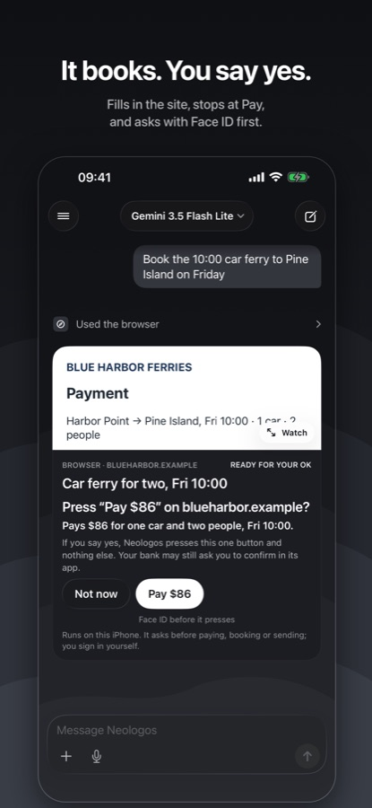
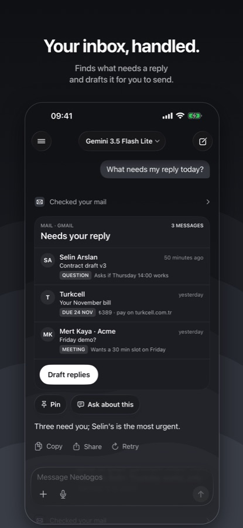
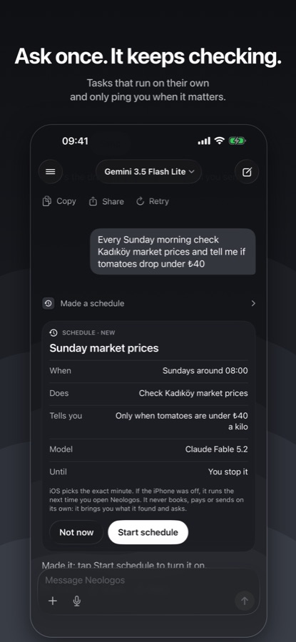
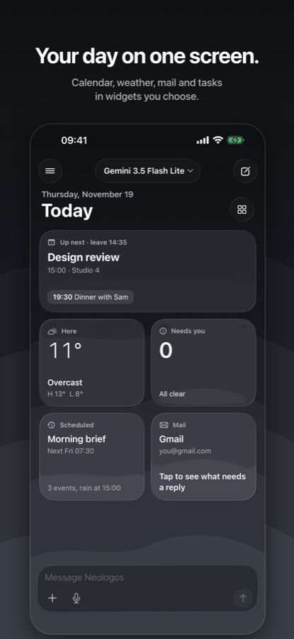
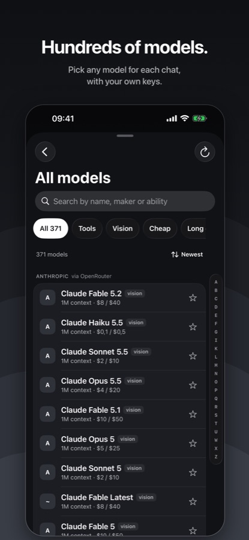
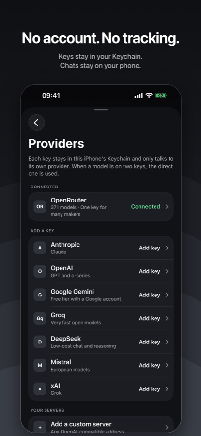

Books on real websites
Its own browser fills in your details, compares sites and stops at the final button. You confirm with Face ID; bank and government sites always ask you to sign in yourself.
For iPhone · iOS 26
Ask in plain words. Neologos opens the website, fills in the form, drafts the email or sets up a check that runs every week, and stops to ask you before anything that costs money or leaves your phone.
No account. No tracking. Bring your own AI key, or use Apple's on-device model.






Its own browser fills in your details, compares sites and stops at the final button. You confirm with Face ID; bank and government sites always ask you to sign in yourself.
Connect Gmail and ask what needs a reply. It finds the messages, sums them up and drafts answers. Nothing is sent until you read it and tap Send.
"Every Friday, check ferry prices and tell me if they drop" becomes a task that runs on its own. You only hear from it when it matters.
Calendar, reminders, maps, weather, Health, Music and Home, each only when you allow it. Pick the widgets you want on Home; use Siri and Shortcuts too.
Word, Excel, PowerPoint and PDF files you can share, and images made or edited on request, ready to drop into a slide or a flyer.
Hundreds of models through OpenRouter, or OpenAI, Anthropic, Google Gemini, Groq, DeepSeek, Mistral and xAI directly. Pick one per chat; you pay them, usually under a cent a message.
"Book the 10:00 car ferry for two on Friday."
Finds the sailing, fills in the form, and you can watch every step or take over.
It stops at "Pay $86" and asks. Nothing is paid, booked, sent or deleted without your OK.
There is no Neologos server and no analytics. Your chats, memory and notes stay on your iPhone, encrypted by iOS. Keys live in the Keychain. When you ask something, your phone talks straight to the AI provider you chose, and nothing at all leaves it if you pick Apple's on-device model.
For the full agent, yes: an OpenRouter key is the easiest start (one key, hundreds of models), or a key from OpenAI, Anthropic, Google, Groq, DeepSeek, Mistral or xAI. On iPhones with Apple Intelligence you can also chat with Apple's on-device model, with no key and nothing leaving your phone.
You pay your AI provider directly for what you use, usually under a cent a message with a fast model. Images cost a few cents each; the app shows the price on every image.
No. It stops at the final step of any payment or booking and asks you, with Face ID when your phone has it. Mail goes out only when you tap Send on the draft.
iPhones with iOS 26. Apple's on-device model needs an iPhone with Apple Intelligence; every other feature works with your own key on any of them.
On your iPhone. There's no Neologos account or server, so we never receive your chats, keys or mail. Settings › Storage exports or deletes everything.